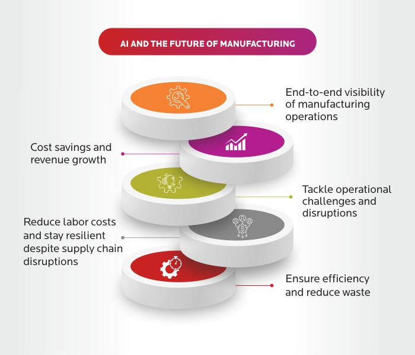

What is AI in manufacturing?
AI in manufacturing involves using technology to automate complex tasks and unearthing previously unknown patterns in manufacturing processes or workflows.

How is AI used in the manufacturing industry?
In manufacturing, AI can offer the most value in planning and production floor operations. According to a BCG report, the most important AI use cases in the manufacturing industry are:
- Intelligent, self-optimizing machines that automate production processes
- Forecasting efficiency losses for better planning.
- Detecting quality defects to facilitate predictive maintenance.